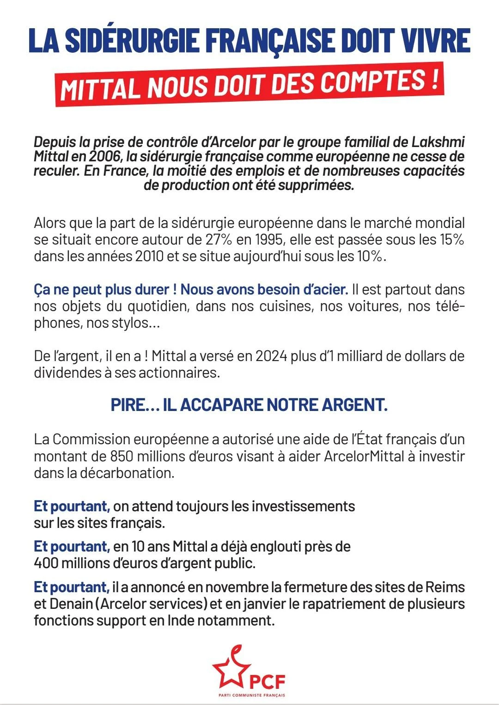
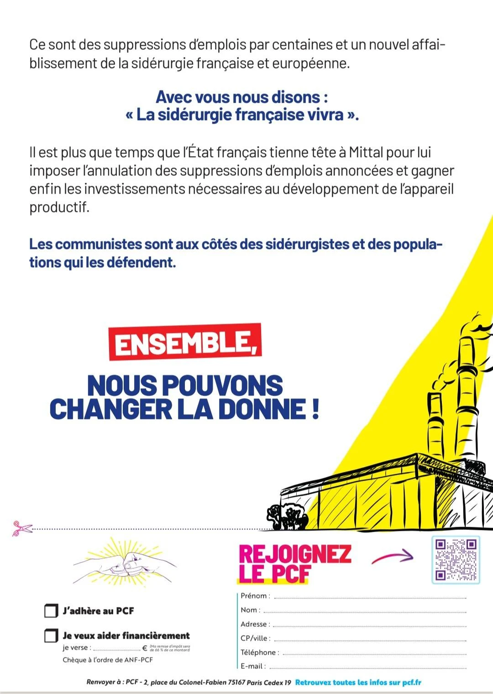

Prise de position
« La sidérurgie française doit vivre ! »
Date indiquée par Facebook · 15 mai 2025
Repères éditoriaux
Nous avons publié ce tract en deux pages sur l’avenir de la sidérurgie et d’ArcelorMittal. Il met en cause les choix du groupe et porte des propositions pour préserver les sites et les emplois.
Texte conservé avec la publication
La sidérurgie française doit vivre !


Sources
Archive rouge · export Facebook · AR-0002-FB-01119
À lire aussi · Michelin à Cholet. La manifestation du 12 décembre en vidéo · Le lien vidéo